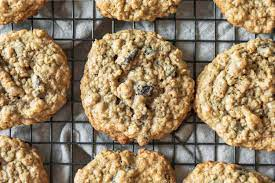

Oat Meal Cookies

Famous chocolate oatmeal cookies formulated from a secret recipe!
This chocolate oatmeal recipe has been passed down generaion after genration. Dating as far back as my great grandfather who had adopted my grandfather. The recipe was handed to him from the then CEO of quaker oats to whom my great grandfather very well. I am pleased to now share it with the vast internet that will now see it and enjoy with their family as much as I have.
Ingredients
- Chocoate Chips
- Oatmeal
- Sugar
- Butter
- Flour
- Eggs
- Salt
- Milk
Steps
- Preheat oven to 350 degress feirinhet
- Mix all the dry ingrdients is a bowl large enough to fit them except the choclate chips (Oatmeal, Sugar, Flour, Salt)
- Melt and cool butter to room tempature
- Mix all the wet ingreients including butter into a seperate bowl (Butter, Eggs, Milk,)
- Slowly mix wet ingrediants into dry bowl until a nice doughy consistancy appears
- Add chocolate chips into the dough
- Use Ice Cream scoop (or hands) to get nice sized balls of dough and put oiled onto baking tray
- Put into oen for about 25 min
- Poke center of cookie to gage how cooked it is and determine how crisp or soft you want your cookies
- Pull cookies out and let cool for 5-7 min
- Enjoy!